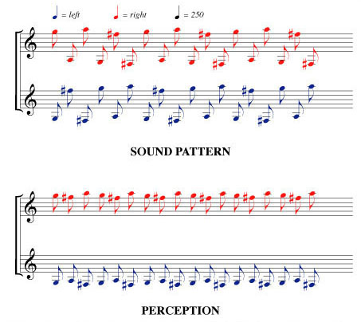

Diana Deutsch's 'Cambiata Illusion'
Click the button at the bottom to play a web audio version of the Cambiata illusion.The following text and images have been taken from Diana Deutsch's Website:
This is the Deutsch's Cambiata Illusion. To get a good stereo effect for this illusion, use stereo headphones with the loudspeakers turned off. If you hear higher tones in one ear and lower tones in the other ear, decide which ear is hearing the higher tones. Then reverse the earphones while the pattern is playing, and decide again which ear is hearing the higher tones. Most righthanders hear the higher tones on the right and the lower tones on the left, regardless of how the earphones are positioned. Lefthanders and ambidextrous people are more varied in terms of where the higher and lower tones appear to be located.
If you are listening through stereo loudspeakers, make sure you have good stereo separation. Listen first with the left and right channels in balance. Then shift the balance all the way to the left. Then shift it all the way to the right. Then bring the channels back into balance again. Notice that when each channel is played separately, you hear a pattern that leaps around in pitch. Equalizing the balance causes your brain to reorganize the tones, so that you hear two smooth melodies instead.
Note: there are currently some issues with timing so the illusion may not play correctly. If you experience this, please try again at a later date